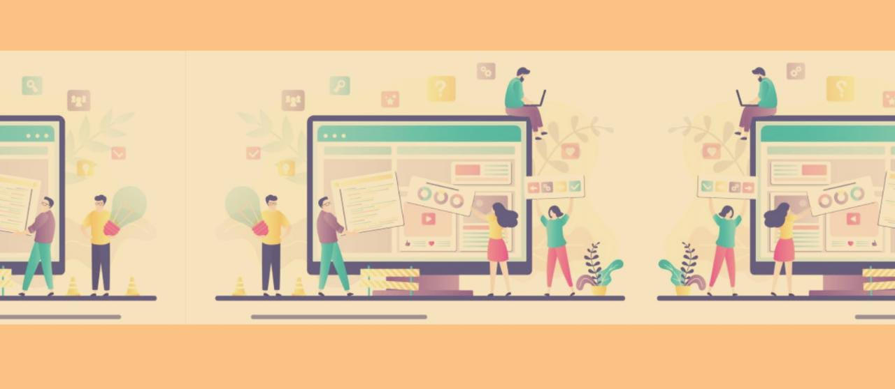

To discover more about me, click on the button below

About me:
Honesty, Hard work and Humility are the
three H's I intend to follow. I study
Computer Science and Engineering as
my major at Vellore Institute of Technology,vellore. I'm experienced and have
acquired knowledge in a variety of
subjects which include operating
systems, Data Structures and Algorithms
and web development.
Skills:
Programming : C, C++, JAVA and Python
Web-Development : HTML, CSS, JAVASCRIPT, PHP, NODE.JS, SQL
Others: Content Writing and Business Development
Subjects Interested in
Operating Systems
Data Structures and algorithms
Machine Learning
Block Chain Technology
Projects: Click on the titles to know more!!
MyOS
BORLD
Weather Predicting App
E-CUBICLE
MEDI-HUB
Mask-Detector
MyOS:
A project based on cosmos and VMWare station which helps in creating customized simple operating systems with
basic functionalities such as reading and writing a file, Calculator application with arithmetic operations and able to boot and shut down.
The whole project is done machine language and C#.
BORLD
This is a project which is very much suitable for book readers. It provided various functionalitiesand features such as reading a book, blogs and articles
login, signup for new users and many more. HTML, css, javascript, php, sql were used in the making of the project
Weather Predicting app
This project helps in predicting weather according to the location choosed. It has been built by using an API provided by various weather forecasting agencies.
HTML, css, javascript have been used to make this project.
E-CUBICLE
A project aimed to provide a sustainable and pandemic free platform for regular desktop users which provides many facilties such as ordering food online,
play music, work with teammates and friends. HTML,CSS, JAVASCRIPT and NODE.JS have been used to deploy this project
MEDI-HUB
This is a project made specially for people with various health concerns. The project provides a platform for users where they can
enter there symptoms and get to know what disease they might face accordingly. Various ML induced applications have been included inorder
to provide great features for the users. It has been built by using python and other webdev languages.
Mask-Detector
A project whose aim is to detect whether a person is wearing mask or not by identifying their pictures. It is done by training the dataset
with many images obtained from sources. It is built using python and python induced libraries.